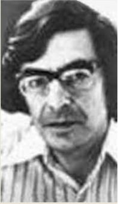
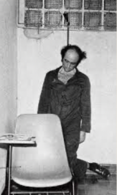
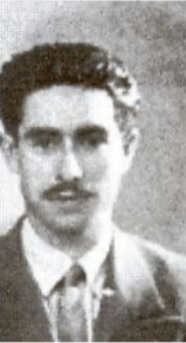
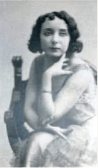

JEAN YVES CLAUDET : SOUS L'AILE "DEL CONDOR"
Franco-chilien d'origine, Jean-Yves Claudet est une figure parmi les symboles internationaux de la lutte contre la dictature chilienne menée par Augusto Pinochet. Militant du MIR (Mouvement de Gauche Révolutionnaire), il lutte à l'international contre le régime de Pinochet. Arrêté en Argentine avec d'autres résistants, il ne restera de lui qu'une phrase, prononcée par un membre de la DINA, police politique chilienne, "Ya no existe" (il n'existe plus). Nous vous emmenons au coeur de son histoire, mélant engagement et répression.
VLADIMIR HERZOG : "LE SUICIDÉ" (BRÉSIL)
Âmes sensibles s'abstenir, nous terminerons cette série de portraits par celui d'un militant du Parti Communiste Brésilien arrêté par la DOI-CODI (agence de répression politique de la dictature brésilienne) avant d'être torturé et mis à mort. Les autorités brésiliennes ont mis en scène sa pendaison dans une prison afin de faire croire à son suicide et d'écarter tous soupçons. Remettons désormais toute la lumière sur l'histoire de ce militant qui aura payé de sa vie ses convictions libertaires.
EL"QUICO" FACE À FRANCO (ESPAGNE)
Au coeur de la violence franquiste, revenons sur l’histoire de Francisco Martinez Lopez Quico, dit “El Quico”, figure de la résistance contre la dictature espagnole. Agent de liaison de la guérilla à Toreno del Sil (Leon) puis membre actif du PCE, il a à de nombreuses reprises fait l’objet de dénonciations, sans jamais que les autorités ne puissent retrouver sa trace. Plongez avec nous au coeur de l’histoire d’un homme qui fait plus que jamais vivre la mémoire de son époque.
MARIA ARCHER : ÉCRIRE SA RÉVOLTE (PORTUGAL)
Femme journaliste sous le régime de Salazar, l'Estado Novo, au Portugal, Maria Archer avait tout pour déplaire. Membre du MUD (Mouvement d'Unité Démocratique), elle est poursuivie et harcelée par la censure du régime, cette militante pro-démocratie, elle s'exile au Brésil durant l'année 1955 pour continuer à s'engager contre la dictature salazariste. Suivez nous au coeur de l'histoire de cette rédactrice émérite du Portugal Democratico.